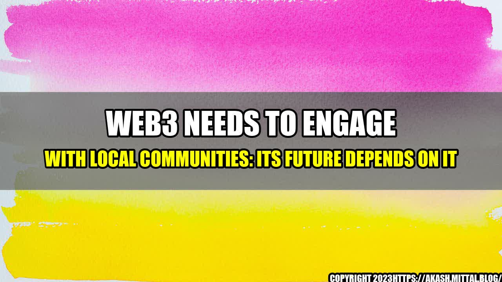

Why Web3 Needs to Connect with Local Communities

For decades, the internet has reshaped our world, empowering us to connect, collaborate, and create in ways that were once unimaginable. Today, a new era is dawning as Web3 technologies emerge, promising to transform our digital lives once again. But if Web3 is to fulfill its potential, it must engage with local communities on a new level.
Why? Because the success of Web3 depends on the participation of real people, in real places, with real needs and aspirations. We cannot simply build a new digital realm and ask people to join us. We must meet them where they are, understand their perspectives, and work with them to co-create the future we all want.
The Story of Web3 and Local Communities
To understand why Web3 needs to engage with local communities, let's consider its history.
In the early days of the internet, many believed that it would be a decentralized, peer-to-peer network, free from the centralized control of governments and corporations. But as the web matured, it became increasingly centralized, with a few dominant players like Google, Facebook, and Amazon controlling vast amounts of data and power.
Now, with Web3 technologies like blockchain, decentralized finance, and Web3 browsers, there is renewed hope for a truly decentralized web. But this time, we must take a different path. We cannot simply build new technologies and expect communities to come to us. We must go to them, listen, and work together to create a better digital world.
Quantifiable Examples of Web3 and Local Community Engagement
So, what does it look like when Web3 engages with local communities? Here are a few examples:
- Community-led blockchain projects: In places like Brazil, Kenya, and India, local communities are creating their own blockchain projects to solve real-world problems like corruption, food safety, and identity verification. These projects are helping to demonstrate the true potential of blockchain and Web3 technologies in solving real-world challenges
- Local Web3 meetups: Around the world, developers, entrepreneurs, and enthusiasts are organizing local meetups to discuss the latest Web3 developments, share knowledge, and build connections. These meetups are helping to build a grassroots movement around Web3 that is inclusive, diverse, and energizing
- Web3 education and training: To truly engage with local communities, we must help people understand what Web3 is and how it can benefit them. That's why there are now many Web3 training programs, including bootcamps, online courses, and mentorship programs, that are helping to build the next generation of Web3 leaders and innovators
An Eye-Catching Title for Web3 Article
Web3: The Future Depends on Local Communities
Conclusion: Why Web3 Needs to Connect with Local Communities in 3 Points
- Real-world problems require real-world solutions: Web3 technologies are not just about creating new digital realms; they are about solving real-world challenges like poverty, corruption, and climate change. To do that, we must engage with local communities on a new level
- Inclusive communities are more resilient and innovative: The most successful Web3 projects will be those that bring together diverse perspectives, backgrounds, and experiences. By engaging with local communities, we can build more inclusive and resilient networks that are better equipped to face the challenges of the future
- Local communities hold the key to adoption and growth: Without the participation and support of local communities, Web3 will struggle to gain traction and scale. By building strong relationships with local communities, we can create a foundation for sustainable growth and adoption
References and Hashtags for Web3 Articles
References:
- https://www.coindesk.com/local-communities-are-key-to-unlocking-web3-potential
- https://www.nfx.com/post/blockchain-new-entrepreneurial-age
- https://www.coywolf.news/seo/semantic-seo/web3-semantic-search/
Hashtags:
- #web3
- #blockchain
- #decentralization
- #localcommunities
- #innovation
Article Category: Technology & Innovation
Curated by Team Akash.Mittal.Blog
Share on Twitter Share on LinkedIn